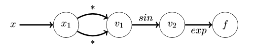

Mountain-Bay Automatic Differentiation¶
Introduction¶
what the problem solves and why it’s important
Motivation¶
Differentiation, or the process of finding the derivative of a function, is a cornerstone operation in computational science, with applications in many other scientific disciplines. While there are several ways to program differentiation, automatic differentiation (AD) is the most efficient (linear in the cost of computing the value), while being numerically stable.
The two common alternative methods to automatic differentiation are symbolic differentiation and finite difference. Though symbolic differentiation gives the exact number down to machine precision, it is computationally heavy and inefficient. Meanwhile, the finite difference method is a linear approximation, lacking machine precision, and is normally only used for testing. AD can handle complex functions while still returning accurate results.
Therefore, AD is a particularly useful tool in calculating derivatives, finding applications in fields as varied as mathematical optimization to machine learning and AI. Optimization utilizes the roots of an equation to maximize or minimize a function, a concept used widely from physics, biology, and engineering to economics and business. Finding derivatives through AD, mostly in the form of gradients and Hessians, are ubiquitous in machine learning, computer vision, and AI. Additional AD application include computational fluid dynamics, atmospheric sciences, and physical modeling.
Math Background¶
Automatic Differentiation (AD) is a method of finding the extrema of functions, This could be for optimization problems, to find the local maxima, or for minimization to find the roots. The key to AD is breaking down complicated functions to much simpler/more manageable functions using the major components that follow
Major Components¶
Chain Rule¶
The chain rule is as follows:
For every function that can be defined as a composite of functions, one function acting on another but with respect to the same variable, here t:
The derivative of the composite function f can be found by applying the derivative on the outer function x with respect to t, and multiplying by the derivative of the inner function y with respect to t:
This can be applied any number of times (), and is the core of automatic differentiation.
AD uses the chain rule to <>
The Gradient¶
When the variable isn’t scalar (one dimensional) like the above, it is a vector. This comes from linear algebra and just means that we’re working in multiple dimensions now.
What changes is not the function but the base variable. The t from above becomes:
To obtain the derivative of the composite function, we use what is called a gradient denoted by which contains all the partial derivatives of the function across the vector as so:
The chain rule applies here as well, so the gradient with respect to a vector x of a given composite function h = h(u(x)) is the partial derivative of h with respect to u times the gradient of u
This can again be applied many times over on functions composed of composite functions, etc.
Elementary Functions¶
These are the base functions that have known (and therefore easy) derivatives, and from these functions all others are composed
Examples of these are: log, sin, polynomial, exp, etc
Evaluation Trace¶
Breaking down each function into its elementary functions can be called an evaluation trace, moving from inside out.
It can be difficult to evaluate a composite function at any given value, so an evaluation trace follows the steps, evaluating the composite function at a given value from the most internal function moving out, so the most internal function is evaluated at the given input, and the function acting on that evaluates on the output, and so forth until the whole composite function is evaluated. Here’s an example:
This function can be shown in a graph or as a trace table

| Trace | Operation | (value) |
| — | — | — |
| | x |
|
|
|
|
|
|
|
| 0 |
| f |
| 1 |
Embedded Derivative¶
The key to AD forward evaluation is the Evaluation Trace. This is Automatic Differentiation.
| Trace | Operation | Derivative | (value, derivative) |
| — | — | — | — |
| | x | 1 |
|
|
|
|
|
|
|
|
|
|
|
| f |
|
|
|
With the derivative embedded as we trace the evaluation of the function, we have an automatic differentiation process in the forward evaluation method.
There is more to say to follow the reverse method, but for now we leave it.
Usage instructions¶
Install package from PyPI:
pip3 install <autodiff> # Package name to be decided on
Once installed, you can instantiate functions used in the differentiation process.
This might look something along the lines of:
import autodiff as ad # Package name to be decided on
import numpy as np # Base our variables on numpy
def f(x): # Define a function
y = np.pow(x, 2) # y = x^2
return y
f_prime = ad.grad(f) # Calculate gradient function
print(f_prime(1)) # Calculate gradient at x = 1
Output of above code segment would be 2 (f’(x) = 2x and f’(1) = 2).
The primary AD object will be autodiff.grad, as that serves as the backbone of autodifferentiation. More objects may be added as we have a clearer idea of implementation details (e.g. specifying forward v. reverse modes, returning Jacobians, etc).
Organization¶
The directory structure for our project is as follows, illustrated in tree format. Note that our modules are stored within src/ad-project/ folder. We also anticipate storing documentation, examples, and our test suite in the appropriate folders, indicated by their names. Other than that, there are also the standard files we see in this type of repository: a README file, a license file, and a requirements file. The structure:
` MountainBay/
-AUTHORS.rst
-CHANGELOG.rst
-docs/
-_static/
-authors.rst
-changelog.rst
-conf.py
-index.rst
-license.rst
-Makefile
-LICENSE.txt
-README.rst
-requirements.txt
-setup.cfg
-setup.py
-src/
-ad_project/
-__init__.py
-skeleton.py
-AD_Object.py
-AD_BasicMath.py
-AD_project.egg-info/
-dependency_links.txt
-not-zip-safe
-PKG-INFO
-requires.txt
-SOURCES.txt
-top_level.txt
-tests/
-conftest.py
-test_skeleton.py
`
We plan on creating two modules, AD_Object and AD_BasicMath. Our first module will be called AD_Object. This will instantiate an Automatic Differentiation (AD) Object to be used in a forward or reverse mode, using the function and value given as input. It will contain methods that would calculate the Jacobian matrix, as well as AD in forward and reverse mode. The second module will be AD_BasicMath. This module will contain basic operations, such as addition, subtraction, and multiplication to be used on an AD object. It will also contain exponential and trig functions such as sin, cos, tan. The module will thus take an AD_Object as input, and output the results of elementary operations desired.
We will be using the framework PyScaffold, because it sets up a folder system for us and incorporates Sphinx, which builds documentation. Examples will be included as well. Both documentation and examples will be stored in the directory. The directory structure set up by PyScaffold is illustrated above, with our own modules for AD_Object and AD_BasicMath included. The test suite will live within the ‘tests’ folder PyScaffold automatically created for us. We will be developing our own tests as needed. In addition, we will use TravisCI and CodeCov, which we already integrated.
This package will be distributed on PyPI, which allows users to upload packages. First, we will wrap our code into distribution packages using wheel and setuptools. We will test our package in order to ensure that all the necessary packages and files are included; Twine will be used in order to also assure that our package description will render accurately on PyPI. We will upload to TestPyPI to check if everything is functioning properly, and if so, we will then upload our package to PyPI using Twine.
Implementation¶
Core data structures:
The core data structures we anticipate using are matrices (ex. Jacobian), vectors (ex. seed vector), lists, tuples, and/or dictionaries for storing information.
What classes will you implement?
We will be implementing a class that takes in a derivative and a value as input, and outputs an object for every calculation.
We will also be implementing a class containing basic arithmetic operations.
What method and name attributes will your classes have?
The class that takes in the derivative and value (AD_Object) will have a variety of methods which would conduct basic calculations, as well as the following:
- Jacobian
This will calculate the Jacobian matrix for the given AD Object.
- Forward
This will calculate AD in forward mode.
- Reverse
This will calculate AD in reverse mode.
- Mixed
This will calculate AD in mixed mode.
The class that contains basic arithmetic operations (AD_BasicMath) would contain methods to sum, subtract, multiply, divide, exponential, and trig functions as well.
What external dependencies will you rely on?
We will be using numpy because of its mathematical capabilities and pandas, since it has an easy to use interface and fast data structures..
How will you deal with elementary functions like sin, sqrt, log, and exp (and all the others)?
These elementary functions will be contained within their own module, AD_BasicMath.
Feedback¶
The TFs noted that the Organization section needed several amendments, one of them being the overall format. Therefore, we changed the format from question and answer to essay format. Next, TFs noted several key details were missing, such as whether we would include our own tests, and where tests, documentation, and examples would be saved. Thus, directory structure was updated to illustrate where these items would be stored, and also to reflect the entire PyScaffold folder setup. Lastly, TFs noted that a more thorough explanation of how the package would be distributed was needed. Thus, we outlined the steps we believe we would take in order to accomplish this task.